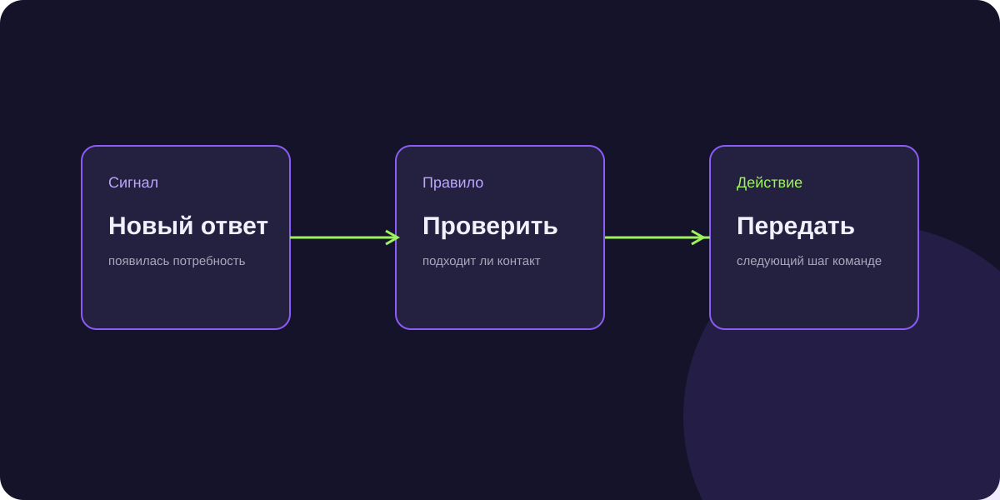

Локальные LLM для бизнеса: как развернуть Ollama и vLLM для защиты коммерческой тайны
Крупные корпорации, банки и заводы не имеют права отправлять клиентские базы и финансовые отчеты в облачные API. Разбираем, как развернуть нейросеть внутри собственного закрытого контура.

Короткий ответ
Локальные LLM (Open-Source модели: Llama 3, Qwen 2.5, DeepSeek-R1-Distill) разворачиваются на собственных серверах компании с помощью инструментов Ollama или vLLM. Это гарантирует 100% изоляцию коммерческих данных, отсутствие риска утечек за рубеж, нулевую зависимость от санкционных блокировок и полное соблюдение требований ФСТЭК и закона 152-ФЗ.
Ollama vs vLLM: что выбрать для корпоративного сервера
- Ollama: идеально подходит для быстрого старта, тестирования гипотез и небольших нагрузок (до 5 параллельных запросов). Запускается одной командой.
- vLLM: высокопроизводительный движок корпоративного уровня с поддержкой PagedAttention, обеспечивающий обработку сотен одновременных диалогов с минимальной задержкой.
Требования к серверному железу (GPU)
Для моделей 8B параметров (Qwen 2.5 7B, Llama 3.1 8B) достаточно одной видеокарты уровня RTX 3090 / 4090 (24 GB VRAM). Для тяжелых моделей 32B–70B параметров потребуется сервер с 2–4 картами NVIDIA A100 / H100 или их аренда в российских ЦОД (Selectel, Cloud.ru).
Юридические преимущества локального хостинга
Данные клиентов, записи переговоров и реквизиты договоров физически не покидают серверную стойку компании. Это снимает любые претензии службы безопасности и исключает штрафы Роскомнадзора за трансграничную передачу ПДн.
Частые вопросы по теме
Уступают ли открытые локальные модели коммерческим ChatGPT и Claude?
В узких бизнес-задачах (квалификация лида по BANT, извлечение сущностей, ответы по регламенту) открытые модели Qwen 2.5 и Llama 3 работают на уровне флагманских моделей.
Можно ли дообучить локальную модель на наших сделках?
Да, через технологию LoRA/QLoRA можно дообучить модель на тысячах успешных звонков ваших лучших менеджеров всего за пару дней.
Внедрение ИИ-ассистента на изолированном сервере без доступа в интернет
Развертывание vLLM с моделью Qwen в закрытом контуре позволило инженерам мгновенно находить ГОСТы и регламенты без риска утечки секретных данных.